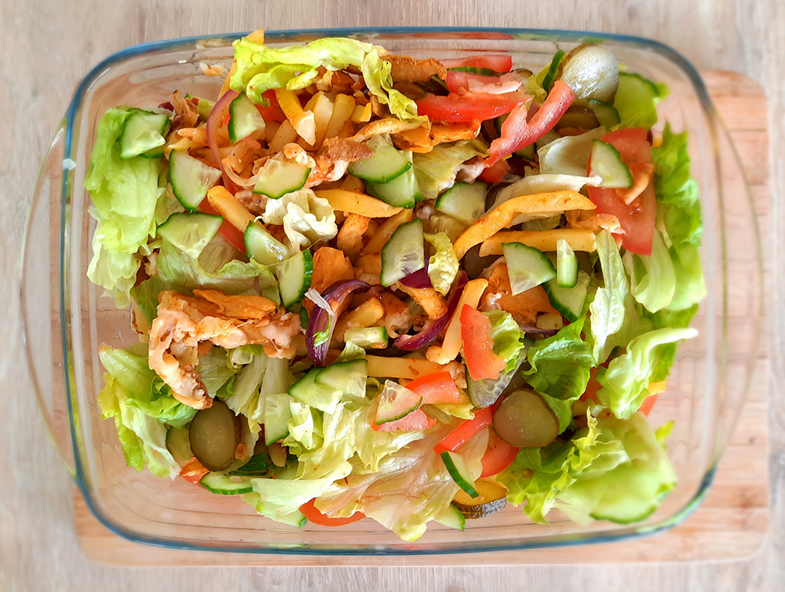

avocado salade

amerikaanse caesar salade

italiaanse caponata

bami met spinazie

koreaanse bibimbap

chili sin carne met guacamole

bieten carpaccio

falafelwrap

koreaanse kip
zwitserse kaasfondue

hawaiiaanse poké bowl

macedonische shopska salade

cottage pie

cubanos

enchiladas

kapsalon

Bereidingsduur: 35 minuten
Aantal personen: 3
Ingrediënten:
400 gram ovenfriet
350 gram (vegetarische) shoarma
2 tomaten
1 rode ui
100 gram ijsbergsla
0,5 stuk komkommer
100 gram geraspte kaas
3 augurken
naar wens knoflooksaus
naar wens sambal
400 gram ovenfriet
350 gram (vegetarische) shoarma
2 tomaten
1 rode ui
100 gram ijsbergsla
0,5 stuk komkommer
100 gram geraspte kaas
3 augurken
naar wens knoflooksaus
naar wens sambal
Instructies:
1. Verwarm de oven voor op 200 graden en bak de friet in 25 minuten goudbruin. Keer de friet tussendoor om. Ondertussen bak je de shoarma gaar. Snijd de ui in halve ringen en voeg deze toe aan de shoarma.
2. Pak een ovenschaal of plaat en verdeel hierover de friet. Maak daarna een laagje met shoarma en strooi er vervolgens de kaas overheen. Zet 5 minuten in de oven tot de kaas is gesmolten.
3. Snijd ondertussen de komkommer in de lengte en snij daarna in plakjes. Snijd de tomaten en augurk in dunne plakken. Scheur de sla met je handen.
4. Verdeel de sla, tomaat, komkommer en augurk over de warme schaal. Voeg knoflooksaus of sambal naar wens toe.
1. Verwarm de oven voor op 200 graden en bak de friet in 25 minuten goudbruin. Keer de friet tussendoor om. Ondertussen bak je de shoarma gaar. Snijd de ui in halve ringen en voeg deze toe aan de shoarma.
2. Pak een ovenschaal of plaat en verdeel hierover de friet. Maak daarna een laagje met shoarma en strooi er vervolgens de kaas overheen. Zet 5 minuten in de oven tot de kaas is gesmolten.
3. Snijd ondertussen de komkommer in de lengte en snij daarna in plakjes. Snijd de tomaten en augurk in dunne plakken. Scheur de sla met je handen.
4. Verdeel de sla, tomaat, komkommer en augurk over de warme schaal. Voeg knoflooksaus of sambal naar wens toe.
Makkelijk veganistisch te maken!